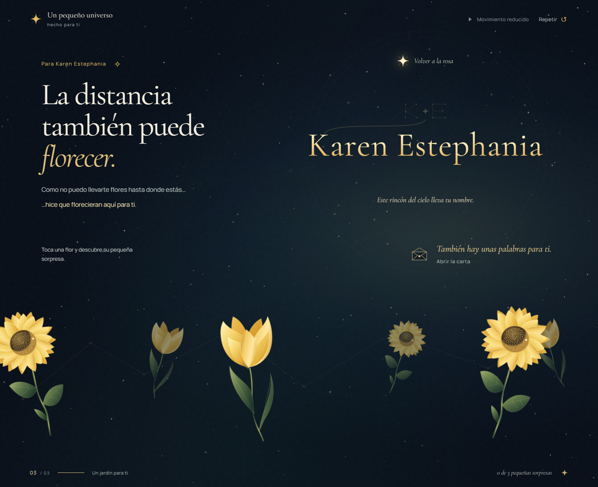

Rama local karen-estephania. Tulipanes y girasoles con la distribución amplia y la profundidad de la referencia.

Build correcto, 4 pruebas de estados, 28 comprobaciones funcionales y 9 auditorías axe sin infracciones. 90 capturas de la matriz responsive. Chrome emulado; sin validación en teléfono físico o Safari/iOS.